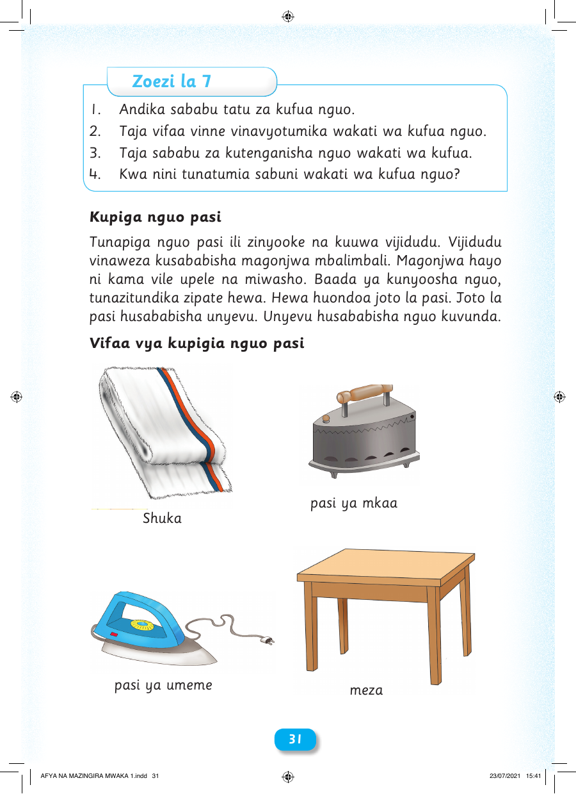

Zoezi la 7 1. Andika sababu tatu za kufua nguo. 2. Taja vifaa vinne vinavyotumika wakati wa kufua nguo. 3. Taja sababu za kutenganisha nguo wakati wa kufua. 4. Kwa nini tunatumia sabuni wakati wa kufua nguo? Kupiga nguo pasi Tunapiga nguo pasi ili zinyooke na kuuwa vijidudu. Vijidudu vinaweza kusababisha magonjwa mbalimbali. Magonjwa hayo ni kama vile upele na miwasho. Baada ya kunyoosha nguo, tunazitundika zipate hewa. Hewa huondoa joto la pasi. Joto la pasi husababisha unyevu. Unyevu husababisha nguo kuvunda. Vifaa vya kupigia nguo pasi pasi ya mkaa Shuka pasi ya umeme meza 3311 AFYA NA MAZINGIRA MWAKA 1.indd 31 23/07/2021 15:41